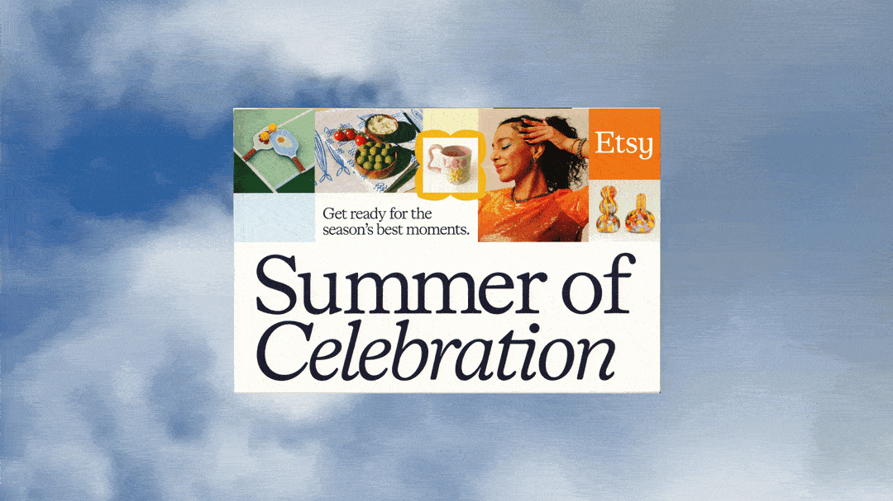
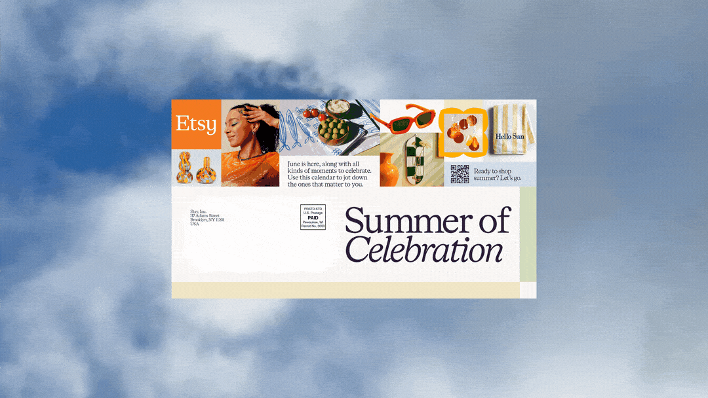
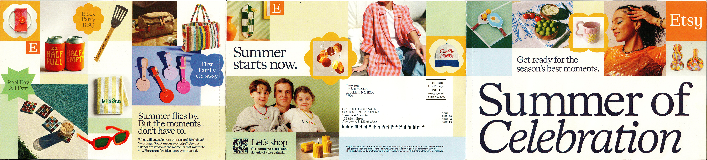
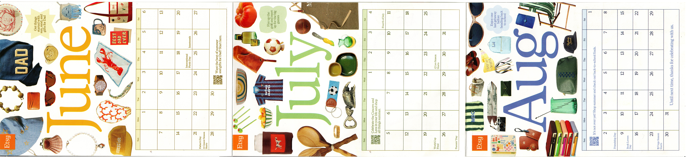
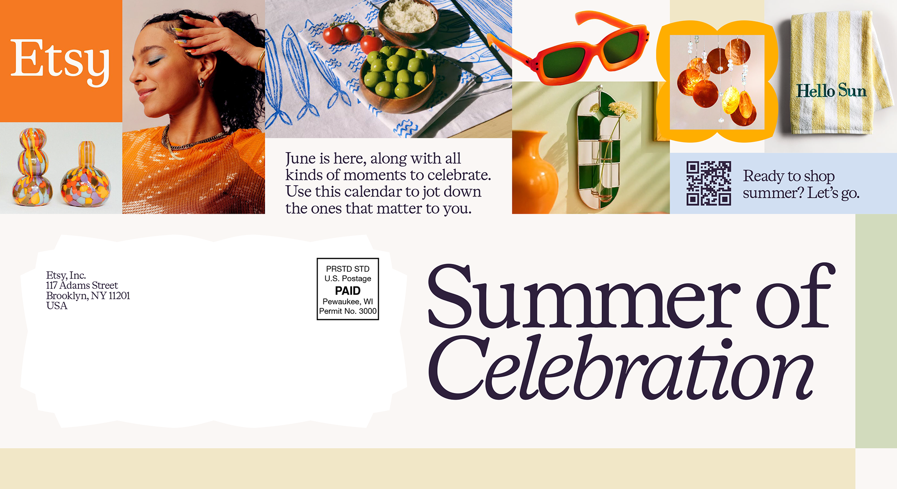
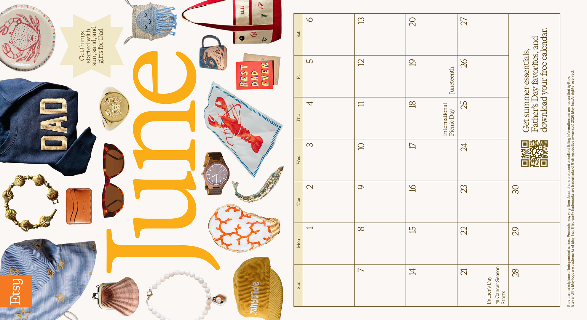

The Spring/Summer Mailer was Etsy's second ever printed mailer activation. The goal for this project was to show buyers how Etsy sellers bring meaning to moments that matter, both big and small. To complement the upcoming season, the team wanted the mailer to include a calendar that buyers could fill out, underscoring how their summer is worth celebrating. The creative challenge was making an interactive piece that recipients would want to use and display, while also inspiring them to shop the best of Etsy merch showcased throughout the piece. To test the performance of different mailer types, the brief included two mailer versions: a trifold with interior and exterior sides and a double-sided jumbo postcard.
Our creative direction was guided by the theme, "Summer of Celebration." We leaned into a bold and shoppable deisgn that was made to feel like a cohesive narrative that unfolded across the pages. I was resposible for design direction, design execution, checking proofs, and file handoff. We sent mailers to 140,000 Etsy buyers (70K received trifolds, 70K received double-sided postcards).


For both the trifold and postcard, we wanted each month to feel distinct, but cohesive. We organized each calendar based on summer celebration themes (beach days, BBQs, end-of-summer trips). By showcasing merchandise curated for each moment, the calendars felt both shoppable and interactive to inspire recipients all summer long.


Trifold exterior and interior


Postcard front and back sides
Creative Director - Laura Jane Kenny
Senior Designer - Alex Ling
Senior Creative - Carly Boyajian
Senior Copywriter - Cory Bortnicker
Project Manager - Francesca Hellebrandt
Production - Quad